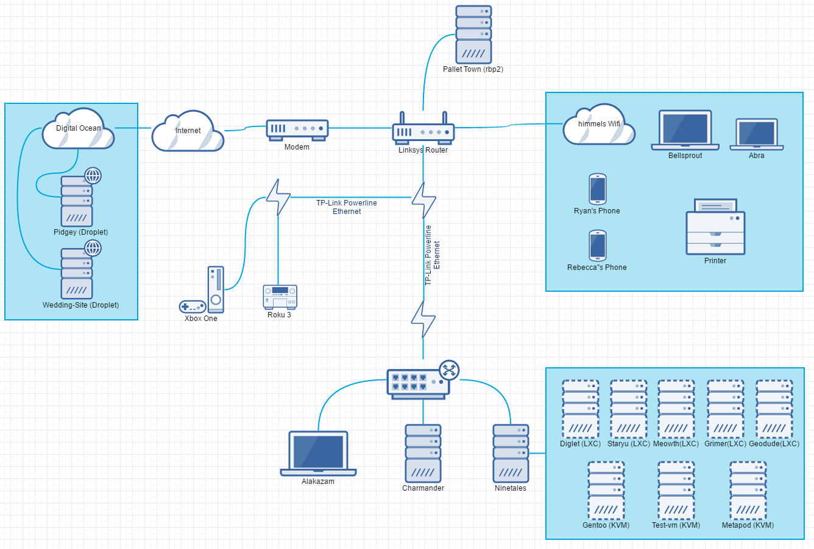
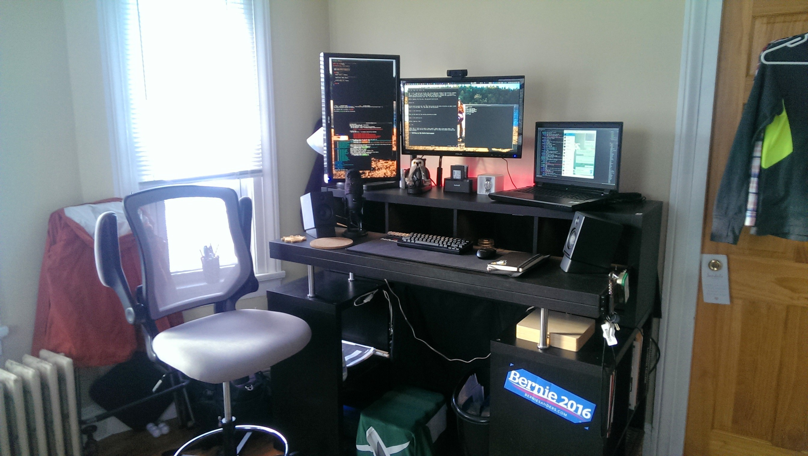
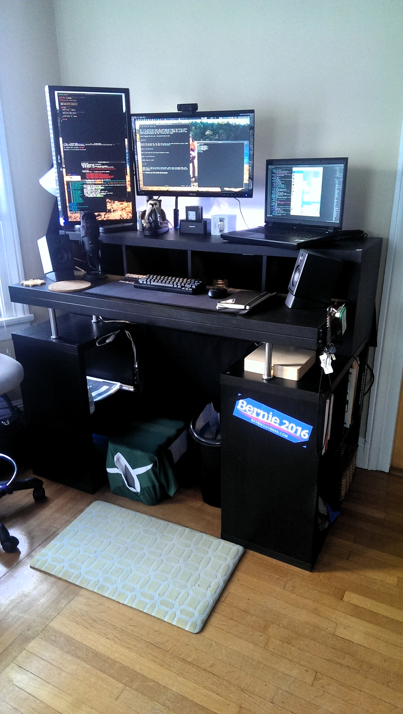
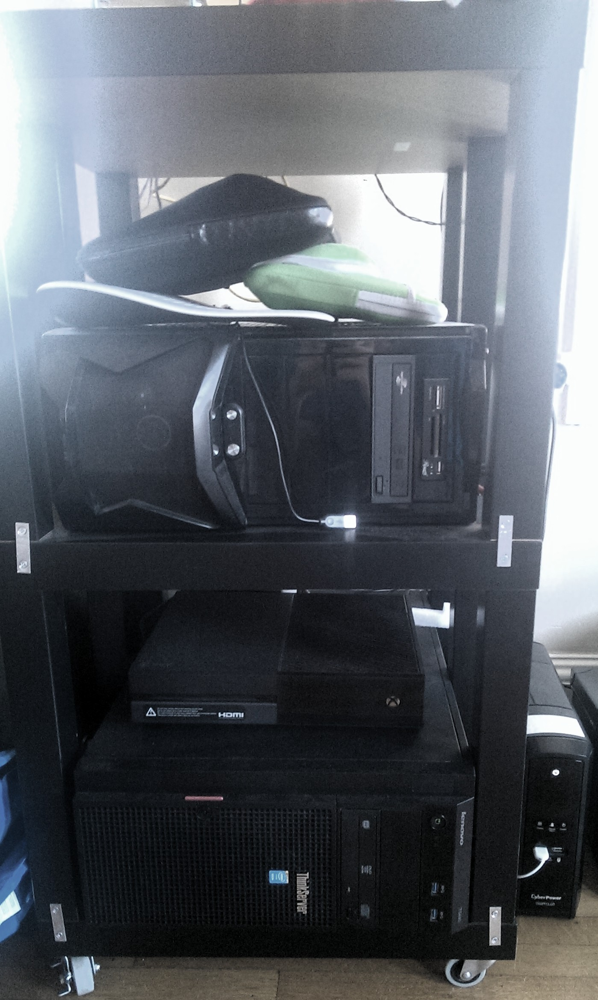

Homelab
This is a page where I maintain the status of the computers in my “Homelab”. I will list my current systems here (potentially with screenshots of my current desktop setup for my workstations), as well as network diagrams of our current setup.
Network
Network Diagram
* A Little Out of Date{kind=link}
Computers
Ryan (Me)
 My Main Computer Setup (Alakazam)
My Main Computer Setup (Alakazam)
 My Workstation Area
{kind=link}
 My Workstation Standing Desk
{kind=link}
Alakazam (Main Workstation Laptop)
System76 Bonobo Extreme
Intel i7 4810-MQ [2.8 Ghz (3.8 Ghz Turbo), 6M Cache, 4 Cores, 8 Threads]
16 GB RAM
Nvidia GTX 970M
120 GB Samsung EVO SSD
1 TB 7200 RPM HDD
17.3” 1920x1080 Display
Monitors)
Solus
Periphery
2 x 23.6" ASUS 1920x1080 Monitors
Happy Hacking Keyboard Lite 2
Audioengine A2+ Speakers & Stands
Bose AE2 Headphones
Logitech HD Pro Webcam c920 Widescreen
Blue Yeti Microphone - Backout Edition
Inateck USB 3.0 to SATA Dual-Bay Hard Drive Docking Station
Kadabra (Portable Laptop)
Lenovo x230
Intel i5-3320M [2.6 GHz (3.3 GHz Turbo), 3M Cache, 2 Cores, 4 Threads]
8 GB RAM
250 GB Samsung 850 EVO SSD
12.5" HD LED 1366x768 Display
9-Cell Battery
Solus
Rebecca (Wife)
Bellsprout (2014)
Macbook Air
Intel i5 (1.4 GHz (2.7 GHz Turbo), 3M Cache, 2 Cores, 2 Threads) ?
4 GB RAM
128 GB PCIe Flash HD
13.3” 1440x900 LED Display
2.96 Lbs and ~0.7” thick
Mac OS
Servers
{kind=link}
Ninetales (VM Host / Home Server)
Lenovo ThinkServer 440
Intel Xeon E3-1225 v3 [3.2 GHz (3.6 GHz Turbo), 8M Cache, 4 Cores, 4 Threads]
20 GB ECC RAM
250 GB Samsung EVO SSD (OS Partition + LVM partion for VM Volumes)
2 x 1TB WD 7200 RPM HDD (ZFS Mirror, for Backups) (Hotswap)
2 x 3TB TOSHIBA 7200 RPM HDD (ZFS Mirror, for Storage) (Hotswap)
Proxmox VE 4.4
Ninetales KVM VMs:
Gentoo - Gentoo - Vm to play with Gentoo Linux
Vomonat - Kali Linux - Used for learning PenTesting techniques
test-vm - Various - VM used to test out differnt distros
Ninetales LXC Containers:
Diglet (50) - Arch Linux - Minecraft Server
Staryu (120) - Arch Linux - Plex Server
Meowth (52) - Arch Linux - Remote Website Writting/ Other
Kakuna (14) - Ubuntu 16.04 - Experimenting with Ledger syncing methods
Tangela (114) - Centos 7 - Nginx for Port and Subdomain Proxy
Geodude (74) - Ubuntu 16.04 - Gitlab Server
Charmander (Test Server / Rebecca’s Gaming Computer)
My old desktop (first computer build)
Intel i7-930 [2.8 GHz (3.06 GHz Turbo), 8M Cache, 4 Cores, 8 Threads]
6 GB RAM
Nvidia GTX 260
120 GB Kingston SSD
Ubuntu MATE 15.10 OSCyberPower 1500VA/900W UPS
Xbox One
PI Cluster

Node 1
Raspberry Pi 3
ARM v8 CPU (1.2 GHz, 4 Cores, 4 Threads)
1 GB RAM
MicroSD card for HD
Ubuntu 16.04 ARM
Node 2
Raspberry Pi 2
ARM Coretx-A7 (900 MHz, 4 Cores, 4 Threads)
1 GB RAM
MicroSD card for HD
Ubuntu 16.04 ARM
Node 3
Banana Pi M1
A20 ARM Cortex-A7 Dual Core (2 Cores, 2 Threads)
1 GB RAM
10/100/1000 Ethernet
MicroSD card for HD
Armbian (Ubuntu 16.04 version)
Digital Ocean Droplets
Pidgey (Nextcloud/Test Cloud Server)
Digital Ocean KVM Droplet
1 Core
512 MB RAM
20 GB SSD
Ubuntu 16.04 OSWedding-Server (Himmelwright Wedding Website Host)
Digital Ocean KVM Droplet
1 Core
512 MB RAM
20 GB SSD
Ubuntu 14.04 LTS OS